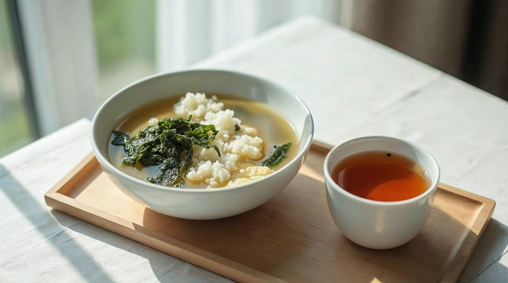
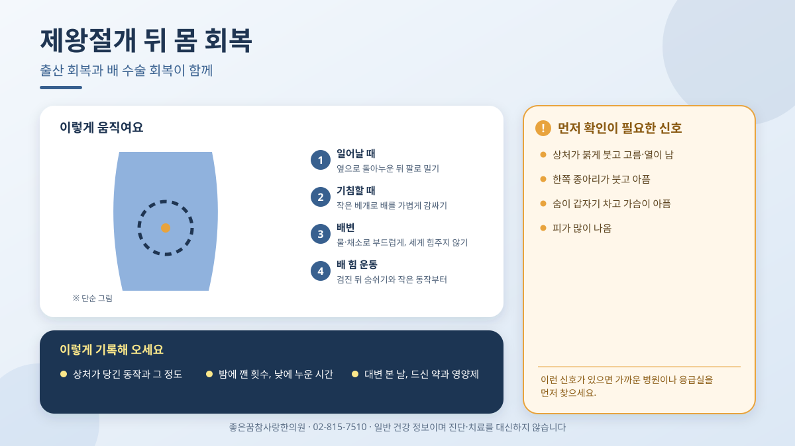

이종호 한의사 감수좋은꿈참사랑한의원 대표원장 (한의사 면허번호 19769)발행 2026-11-26 · 수정 2026-11-26
이 글의 차례
아기를 안아 젖을 물리려고 몸을 조금 돌리는데, 아랫배 상처가 당겨 저도 모르게 숨을 멈춥니다. 웃거나 기침을 할 때도 배를 손으로 감싸게 되고, 침대에서 일어날 때는 한참을 옆으로 돌아누운 채 마음의 준비를 합니다. 제왕절개로 출산하신 분들이 진료실에서 가장 먼저 꺼내시는 장면입니다.
제왕절개는 아기를 만나는 출산이면서 동시에 배를 여는 수술입니다. 그래서 회복도 두 갈래가 겹칩니다. 자궁이 제자리로 돌아가고 오로가 나오는 출산 뒤의 회복, 그리고 피부와 근막, 근육이 아무는 수술 뒤의 회복이 함께 진행됩니다.
그런데 주변에서는 아기만 바라봅니다. 본인도 아기를 돌보느라 내 몸은 뒤로 미루기 쉽습니다. "자연분만보다 빨리 끝났으니 괜찮겠지"라는 말을 들으면 아픈 티를 내기도 어렵습니다. 저는 그 마음부터 알아 드리고 싶습니다. 당기고 무거운 것은 엄살이 아니라 몸이 아무는 과정입니다.
이 글에서는 제왕절개 뒤 회복이 어떤 순서로 흘러가는지, 무엇이 흔한 불편이고 무엇은 먼저 산부인과에 확인할 일인지, 그리고 한의원에서는 어떤 부분을 함께 살필 수 있는지 차근차근 정리했습니다.
제왕절개 뒤 회복은 어떤 순서로 흘러가나요?
수술 직후 며칠은 상처 통증과 배에 가스가 차는 불편이 가장 큽니다. 마취와 수술로 장의 움직임이 잠시 느려졌다가 다시 깨어나는 시기라서, 방귀가 나오고 걷기 시작하는 것이 회복의 첫 신호가 됩니다. 이 무렵에는 일어나 앉는 것 자체가 큰일처럼 느껴집니다.
퇴원 뒤 첫 몇 주는 피부 상처가 겉으로 아물어 가는 시기입니다. 겉은 붙어 보여도 그 아래 근막과 근육은 더 천천히 단단해집니다. 그래서 겉으로 멀쩡해 보이는데도 무거운 것을 들거나 배에 힘을 주면 깊은 곳이 당기는 느낌이 남습니다.
출산 뒤 6주 무렵 산부인과 검진에서 자궁 회복과 상처를 확인하고 나면 일상의 폭을 조금씩 넓혀 갑니다. 다만 배 힘이 예전처럼 돌아오는 데는 그보다 긴 시간이 걸리는 경우가 많습니다. 몇 달이 지나도 상처 주변이 저릿하거나 감각이 무딘 느낌이 남는 것도 흔한 일입니다.
회복 속도는 사람마다 꽤 다릅니다. 진통을 오래 겪다가 수술한 경우, 출혈이 많았던 경우, 빈혈이 있는 경우, 잠을 거의 못 자는 경우에는 기운이 더디게 돌아옵니다. 남과 비교하기보다 지난주의 나와 비교해 보시길 권합니다.
왜 제왕절개 뒤에는 허리와 온몸이 함께 무거울까요
상처는 배에 있는데 허리와 어깨, 손목까지 아프다고 말씀하시는 분이 많습니다. 이것은 이상한 일이 아닙니다. 배의 앞쪽 근육은 몸통을 받쳐 주는 기둥의 한 면인데, 그 면이 잠시 힘을 쓰지 못하면 허리와 등 근육이 대신 버티게 됩니다.
상처가 당기는 것을 피하려고 몸을 앞으로 웅크린 채 지내는 것도 원인이 됩니다. 등이 굽고 어깨가 말리면 목과 등 위쪽이 뻣뻣해지고, 수유 자세까지 겹치면 하루 내내 같은 근육만 일을 합니다. 일어날 때 팔로 버티다 보니 손목도 함께 지칩니다.
여기에 출산 뒤의 몸 상태가 더해집니다. 임신 중 늘어났던 인대는 아직 느슨하고, 출혈로 기운이 떨어져 있으며, 밤잠은 두세 시간씩 쪼개집니다. 몸을 회복시킬 재료와 시간이 모두 부족한 상태에서 아기를 돌보는 일이 시작되니 온몸이 무겁게 느껴질 수밖에 없습니다.
한의학에서는 출산 뒤를 기운과 혈이 크게 쓰인 시기로 봅니다. 땀이 많이 나고 쉽게 지치며, 찬 기운에 예민해지는 것도 이 흐름으로 설명합니다. 그래서 진료실에서는 아픈 자리만 보지 않고 잠과 땀, 소화, 기분까지 함께 여쭙습니다.
자연분만 뒤 회복과는 무엇이 다른가요
자연분만 뒤에는 회음부 통증과 골반 아래쪽의 불편이 앞에 서는 경우가 많고, 제왕절개 뒤에는 배 상처와 배 힘의 회복이 앞에 섭니다. 둘 다 출산이라는 큰일을 치른 몸이라는 점은 같지만, 조심할 동작과 회복의 순서가 조금 다릅니다.
제왕절개를 하셨다면 배에 압력이 크게 걸리는 동작이 한동안 부담이 됩니다. 누운 자세에서 바로 윗몸을 일으키는 동작, 무거운 것을 허리 힘으로 드는 동작, 숨을 참고 세게 힘주는 배변이 대표적입니다. 같은 일이라도 방법을 바꾸면 상처가 덜 당깁니다.
반대로 제왕절개를 했으니 골반이나 아래쪽은 괜찮을 것이라고 여기시는 분도 있는데, 임신 기간 동안 아기와 자궁의 무게를 버틴 것은 같습니다. 그래서 제왕절개 뒤에도 치골이나 꼬리뼈 쪽 불편, 기침할 때 소변이 새는 느낌이 생길 수 있습니다.
상처와 배의 감각, 이런 것은 흔합니다
상처 주변이 저릿하거나 피부 감각이 둔한 느낌은 꽤 오래 남는 경우가 많습니다. 피부 아래 가는 신경이 수술 때 함께 영향을 받았다가 천천히 다시 이어지는 과정이라서, 몇 달에 걸쳐 조금씩 달라집니다.
상처 위쪽 배가 살짝 처져 보이거나 상처선이 단단하게 만져지는 것도 흔합니다. 흉터가 자리를 잡는 동안에는 붉었다가 차츰 옅어지고, 단단함도 서서히 풀립니다. 흉터 관리 방법은 산부인과나 피부과에서 상처 상태를 보고 안내받으시는 것이 가장 정확합니다.
배에 가스가 차고 변이 단단해지는 것도 흔한 불편입니다. 진통제, 철분제, 적게 마신 물, 줄어든 움직임이 함께 작용합니다. 화장실에서 세게 힘을 주면 상처가 당기니, 변을 부드럽게 만드는 쪽으로 생활을 먼저 맞춰 보시는 것이 좋습니다.
오로도 자연분만과 마찬가지로 몇 주에 걸쳐 나옵니다. 처음에는 붉다가 차츰 옅은 색으로 바뀌고 양도 줄어드는 흐름이 흔합니다. 양이 다시 많아지거나 냄새가 달라졌다면 산부인과에 먼저 알려 주세요.
먼저 이렇게 여쭙니다
처음 오시면 저는 대략 이런 순서로 여쭙니다. 미리 생각해 오시면 이야기가 훨씬 수월해집니다.
- 출산은 언제 하셨고, 산부인과 검진은 어디까지 받으셨나요?
- 상처는 어떻게 아물고 있다고 들으셨나요? 당기는 동작이 있나요?
- 지금 가장 불편한 곳은 배, 허리, 어깨, 손목 가운데 어디인가요?
- 수유 중이신가요? 하루 몇 번, 어떤 자세로 하시나요?
- 밤에 몇 번 깨고, 낮에 잠깐이라도 눕는 시간이 있나요?
- 대변은 며칠에 한 번 보시고, 철분제나 진통제를 드시나요?
모든 질문에 정확히 답하지 못하셔도 괜찮습니다. 산부인과에서 받은 퇴원 안내문과 드시는 약 봉투만 가져오셔도 이야기의 절반은 시작된 셈입니다.
임신 중 혈압이나 혈당 문제가 있었는지, 수술 전 진통을 오래 하셨는지, 출혈이 많았다는 말을 들으셨는지도 함께 여쭙니다. 이런 이야기는 지금 기운이 얼마나 떨어져 있는지, 회복의 속도를 어떻게 잡을지 가늠하는 데 참고가 됩니다.

일상에서 먼저 해 볼 수 있는 것
회복기에는 무엇을 더 하는 것보다 상처에 부담을 덜 주는 방법으로 바꾸는 것이 먼저입니다. 작은 동작 하나를 바꾸는 것만으로도 하루의 당김이 꽤 줄어듭니다.
- 누웠다 일어날 때는 옆으로 돌아누운 뒤 팔로 밀며 천천히 앉기
- 기침이나 재채기를 할 때는 작은 베개로 배를 가볍게 감싸 누르기
- 아기보다 무거운 것은 한동안 다른 사람에게 부탁하기
- 물은 조금씩 자주 마시고, 채소와 국물로 변을 부드럽게 하기
- 집 안에서 짧게 자주 걷기, 처음에는 몇 분부터
- 아기가 잘 때 집안일보다 잠깐 눕는 쪽을 먼저 고르기
숨쉬기도 회복의 시작이 될 수 있습니다. 편하게 누워 배 위에 손을 얹고, 코로 숨을 들이쉴 때 배가 살짝 올라오고 내쉴 때 천천히 내려가는 것을 느껴 보세요. 상처가 당기지 않는 범위에서 하루 몇 번, 몇 분이면 충분합니다.
배 힘을 되찾는 운동은 산부인과 검진에서 괜찮다는 말을 들은 뒤에 시작하시길 권합니다. 처음에는 숨을 내쉬며 아랫배를 살짝 당기는 정도의 아주 작은 움직임부터 하고, 윗몸일으키기처럼 배에 큰 압력이 걸리는 운동은 뒤로 미룹니다.
수유 자세도 상처를 생각해서 고릅니다. 배 위에 아기를 올리는 자세가 부담스럽다면 옆구리에 끼듯 안는 자세나 옆으로 누워 먹이는 자세를 시도해 보세요. 수유 쿠션으로 아기 높이를 올리면 등이 덜 굽습니다.
복대는 상처가 당길 때 잠시 도움이 된다고 느끼는 분이 있지만, 너무 세게 오래 조이면 숨이 얕아지고 배 근육이 스스로 힘을 쓸 기회가 줄어듭니다. 쓰신다면 산부인과에서 안내받은 범위 안에서, 움직일 때 위주로 가볍게 쓰시길 권합니다.
한의원에서 함께 살필 수 있는 경우
- 상처는 잘 아물었다는데 허리와 등이 계속 무겁고 뻣뻣한 경우
- 수유와 아기 안기로 어깨, 목, 손목이 함께 아픈 경우
- 땀이 많고 쉽게 지치며 손발이 시린 느낌이 이어지는 경우
- 잠이 쪼개진 뒤로 낮에도 멍하고 기운이 없는 경우
- 배에 가스가 차고 대변이 시원하지 않은 날이 이어지는 경우
좋은꿈참사랑한의원에 오시면 먼저 아래 '먼저 확인이 필요한' 신호가 없는지부터 봅니다. 그다음 맥을 짚고, 불편한 자리를 직접 만져 보며 어느 동작에서 아픈지 확인합니다. 상처 부위와 그 주변은 아무는 정도를 고려해 피하고, 허리와 등, 어깨처럼 대신 버티느라 지친 자리를 중심으로 봅니다.
진찰한 내용을 바탕으로 생활에서 바꿔 볼 것 하나와 함께 침, 부드러운 관리, 한약 상담 가운데 지금 상태에 맞는 것을 정합니다. 한약은 수유 중인지, 드시는 약이 무엇인지 모두 확인한 뒤 신중하게 정합니다. 산부인과에서 받은 약은 상의 없이 멈추지 않습니다.
다음 임신 가능성이 있거나 계획 중이시라면 그 사실을 먼저 알려 주세요. 그럴 때는 산부인과와 상의한 뒤 진료 방향을 정합니다. 한의원 진료는 산부인과 진료를 대신하지 않고, 그 사이의 몸의 무거움과 잠, 소화를 함께 살피는 자리라고 생각해 주시면 됩니다.
이렇게 기록해 오시면 상담이 쉬워집니다
회복기의 몸은 하루하루 조금씩 달라집니다. 일주일 정도만 간단히 적어 보세요. 바쁜 날은 한 줄이어도 괜찮습니다.
- 상처가 당긴 동작과 그 정도
- 허리, 어깨, 손목 가운데 불편했던 곳
- 밤에 깬 횟수와 낮에 누운 시간
- 대변 본 날과 굳기
- 땀이 많았던 때와 기운이 바닥이었던 때
- 드신 약과 영양제
기록을 나란히 놓고 보면 어떤 동작이 몸을 가장 힘들게 하는지가 보이기 시작합니다. 그 동작 하나를 바꾸는 것이 다음 걸음이 됩니다.
가족이 함께 도와주면 좋은 것
제왕절개 뒤 첫 몇 주는 혼자 모든 것을 해내기 어려운 시기입니다. 가족에게 부탁할 일을 미리 정해 두면 도움을 청하는 마음의 부담도 줄어듭니다. 부탁은 약한 모습이 아니라 회복을 위한 계획입니다.
장바구니와 빨래 바구니처럼 무거운 것을 드는 일, 바닥에 쪼그려 앉아 하는 청소, 아기 욕조에 물을 받아 옮기는 일은 한동안 다른 사람이 맡아 주면 좋습니다. 밤중 수유 가운데 한 번이라도 대신 맡아 주면 쪼개진 잠이 조금 이어집니다.
식사도 마찬가지입니다. 한 손으로 먹을 수 있는 간단한 반찬과 미리 데워 둔 국, 손 닿는 곳에 놓인 물병 하나가 회복기의 하루를 꽤 편하게 만듭니다. 가족이 이 글을 함께 읽어 보시는 것도 좋습니다.
서두르지 않아도 괜찮습니다
제왕절개 뒤의 회복은 생각보다 길고, 생각보다 사람마다 다릅니다. 몇 주 만에 일상으로 돌아가는 분도 있고, 몇 달이 지나서야 배에 힘이 붙는 분도 있습니다. 어느 쪽이든 잘못된 것이 아닙니다.
이번 주에는 일어나는 방법 하나, 혹은 낮에 눕는 시간 하나만 바꿔 보세요. 아기를 돌보는 손이 편해지려면 그 손을 가진 몸이 먼저 쉬어야 합니다. 다음에 오시면 일주일의 기록부터 함께 펼쳐 보겠습니다.
이런 증상은 먼저 확인이 필요합니다
- 상처가 붉게 부어오르며 진물이나 고름이 나오고 열이 나는 경우
- 한쪽 종아리가 붓고 아프거나, 숨이 갑자기 차고 가슴이 아프거나, 피가 많이 나오는 경우
이런 신호가 있으면 한의원보다 가까운 병원이나 응급실을 먼저 찾으세요.
함께 읽으면 좋은 글
- 출산 뒤 몸 회복, 관절·땀·잠·기분은 무엇부터 살피나요?
- 출산 뒤 우울감과 불안이 몇 주째 이어질 때(산후 우울)는 어떻게 살피나요?
- 빈혈이 있다는 말을 듣고 어지럽고 쉽게 지칠 때, 철분과 생활은 어떻게 살피나요?
- 아기를 안거나 휴대폰을 쥘 때 엄지 쪽 손목이 찌릿한 드퀘르뱅 건초염은 어떻게 살피나요?
- 임신 중이거나 임신 가능성이 있을 때는 한의원에 무엇을 알려야 하나요?

여쭙는 것
- 출산은 언제 하셨고, 산부인과 검진은 어디까지 받으셨나요?
- 상처는 어떻게 아물고 있다고 들으셨나요? 당기는 동작이 있나요?
- 지금 가장 불편한 곳은 배, 허리, 어깨, 손목 가운데 어디인가요?
생활에서 해 볼 것
- 누웠다 일어날 때는 옆으로 돌아누운 뒤 팔로 밀며 천천히 앉기
- 기침이나 재채기를 할 때는 작은 베개로 배를 가볍게 감싸 누르기
- 아기보다 무거운 것은 한동안 다른 사람에게 부탁하기
한의원에서 함께 살필 것
- 상처는 잘 아물었다는데 허리와 등이 계속 무겁고 뻣뻣한 경우
- 수유와 아기 안기로 어깨, 목, 손목이 함께 아픈 경우
- 땀이 많고 쉽게 지치며 손발이 시린 느낌이 이어지는 경우
먼저 확인이 필요한 신호
- 상처가 붉게 부어오르며 진물이나 고름이 나오고 열이 나는 경우
- 한쪽 종아리가 붓고 아프거나, 숨이 갑자기 차고 가슴이 아프거나, 피가 많이 나오는…
한눈에 보는 표
| 구분 | 핵심 |
|---|---|
| 여쭙는 것 | 출산은 언제 하셨고, 산부인과 검진은 어디까지 받으셨나요? 상처는 어떻게 아물고 있다고 들으셨나요? 당기는 동작이 있나요? |
| 생활에서 해 볼 것 | 누웠다 일어날 때는 옆으로 돌아누운 뒤 팔로 밀며 천천히 앉기 기침이나 재채기를 할 때는 작은 베개로 배를 가볍게 감싸 누르기 |
| 한의원에서 함께 살필 것 | 상처는 잘 아물었다는데 허리와 등이 계속 무겁고 뻣뻣한 경우 수유와 아기 안기로 어깨, 목, 손목이 함께 아픈 경우 |
| 먼저 확인이 필요한 신호 | 상처가 붉게 부어오르며 진물이나 고름이 나오고 열이 나는 경우 한쪽 종아리가 붓고 아프거나, 숨이 갑자기 차고 가슴이 아프거나, 피가 많이 나오는 경우 |
자주 묻는 질문
제왕절개를 하고 언제부터 한의원 진료를 받을 수 있나요?
산부인과에서 상처와 회복 상태를 확인받은 뒤 상의하시길 권합니다. 오시면 출산 시기와 상처 상태를 먼저 여쭙고, 상처 주변은 피해서 지금 몸 상태에 맞는 방법을 정합니다.
수유 중인데 한약을 먹어도 되나요?
수유 중이라는 것과 드시는 약을 먼저 알려 주세요. 모두 확인한 뒤 신중하게 정하고, 필요하면 산부인과나 소아청소년과와 상의하시도록 안내합니다.
상처 주변이 몇 달째 저릿하고 감각이 둔한데 괜찮은가요?
피부 아래 가는 신경이 천천히 다시 이어지는 과정에서 흔히 생기는 느낌입니다. 다만 붓고 붉어지거나 통증이 점점 심해진다면 산부인과에서 먼저 확인받으세요.
배 힘을 되찾는 운동은 언제부터 하나요?
산부인과 검진에서 괜찮다는 말을 들은 뒤 숨쉬기와 아랫배를 살짝 당기는 작은 움직임부터 시작합니다. 윗몸일으키기처럼 배에 큰 압력이 걸리는 운동은 뒤로 미루세요.
제왕절개 뒤에도 골반이나 허리가 아플 수 있나요?
네, 임신 기간 동안 무게를 버틴 것은 같기 때문에 흔히 생깁니다. 배 힘이 약해진 사이 허리와 등이 대신 버티는 것도 이유가 되어, 진료실에서는 이 부분을 함께 살핍니다.
좋은꿈참사랑한의원은 재진 때 지난번 이야기부터 이어서 여쭙니다. 진료시간과 예약은 오시는 길에서 확인하세요.
어디서 상담받을 수 있나요?
좋은꿈참사랑한의원은 서울 동작구 만양로2길 2 신성빌딩 3층·5층(서울 동작구 상도동, 7호선 상도역 3번 출구 근처)에 있습니다. 한의사 3명(이종호 대표원장, 조영기 수석진료원장, 정원영 진료원장)이 진료합니다. 진료시간은 평일 09:30~20:00(점심 13:00~14:00), 토·일·공휴일 09:30~15:00이며, 방문 전 전화로 확인을 권합니다. 예약은 네이버 예약, 카카오톡 상담, 전화 02-815-7510로 받습니다.
이 글은 일반적인 건강 정보이며 개인의 진단이나 치료를 대신하지 않습니다. 증상이 있거나 복용 중인 약이 있다면 진료를 통해 확인하세요. 치료 효과는 개인마다 다를 수 있습니다.
작성 기준: 일반적으로 알려져 있는 건강 정보를 참고해 정리했습니다(대표원장 감수). 증상 기록은 1~2주 동안 하루 1회, 비슷한 시간에 적어 오시면 지난 상태와 비교하기 쉽습니다.